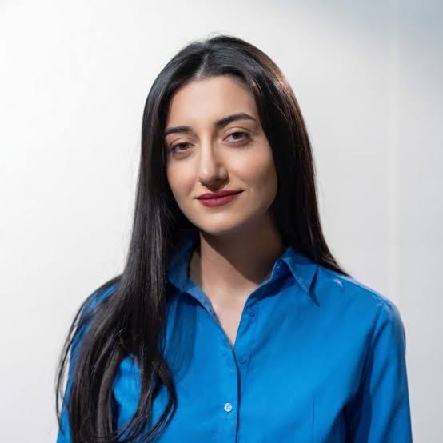
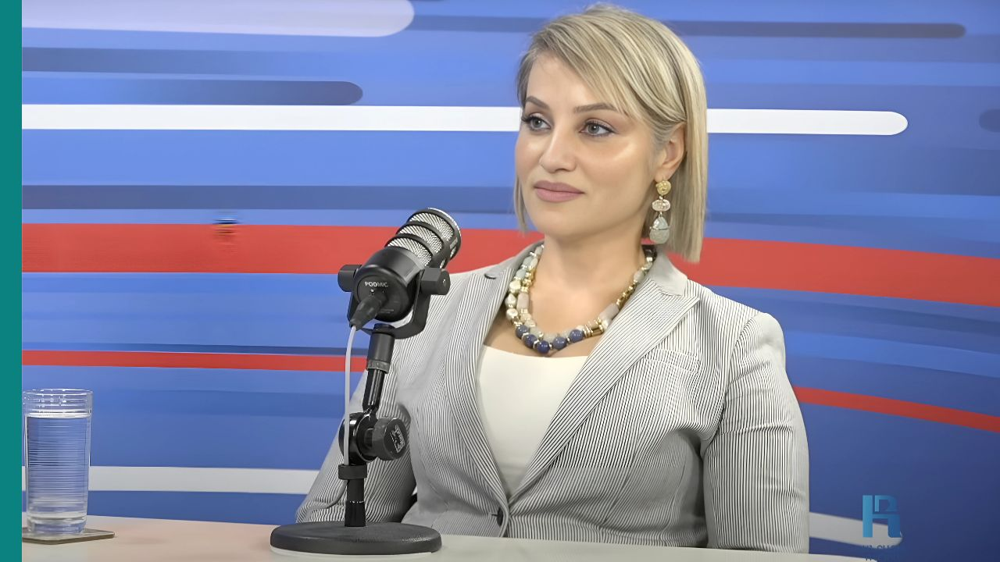

Source assessment
Review the provenance, internal coherence and evidentiary limits of the documents.
From exposure to impact
How FIP.am’s investigation into Kremlin-linked hybrid campaigns moved across languages, platforms and borders—and what happened after publication.
Investigative journalism can reveal the architecture of a foreign influence operation. But publication alone does not establish impact. This story follows the evidence after FIP.am’s investigation was released: who encountered it, who amplified it, how it travelled internationally, and where the available evidence stops.
The documents were obtained by the newsroom from a source. They contained working correspondence attributed to employees of the Social Design Agency (SDA), with participants communicating under pseudonyms.
The reporting task was not simply to reproduce leaked claims. The newsroom had to identify actors and operations, connect the correspondence to observable events, and distinguish documented evidence from inference.
Review the provenance, internal coherence and evidentiary limits of the documents.
Compare names, dates, narratives and operational details with public records and previously documented activity.
Separate what the documents directly demonstrate from what can only be assessed with supporting external evidence.
Turn a document-heavy investigation into a multilingual article and a concise visual explainer for wider audiences.
Read the English version and access the article’s supporting multimedia material.


The analysis treats impact as a sequence of observable signals rather than a single claim.
Combined page views across the Armenian, Russian and English versions.
186,666 people reached · 1,324 shares.
20,363 people reached · 451 shares.
Translation functioned as a distribution strategy, not simply a reproduction step.
Reach shows exposure. Shares show circulation. Neither metric, on its own, demonstrates a change in public attitudes, policy or institutional behaviour.
Cross-border citations extended the investigation’s lifespan and placed Armenian reporting inside a wider European discussion of Russian influence operations.
Reported the Moldova-related findings and sought a response from a named Romanian political figure.
Read publication ↗ InternationalCited FIP.am while expanding the investigation across borders.
Read investigation ↗ United StatesCredited FIP.am in reporting on efforts to influence search and AI.
Read investigation ↗ ItalyPlaced the documented operations within a broader account of Russian cognitive attacks against Europe.
Read publication ↗ FranceExamined the operational background of Russian disinformation activity targeting France.
Read publication ↗ Bosnia and HerzegovinaCovered allegations concerning planned provocations against religious sites in Paris.
Read publication ↗ JapanConnected the wider influence infrastructure to information operations involving Wikipedia.
Read publication ↗ ArmeniaThe originating investigation, published for domestic and international audiences.
Read original ↗Interviews and professional responses help explain what analytics cannot: how the investigation was assessed, reused and understood inside the fact-checking and FIMI community.

Journalist and fact-checker, Media.am’s “Verified” project
“Fact-checking gives us the truth about a specific fact, while FIMI shows the larger strategy surrounding that fact.”

Journalist and founding president, For Equal Rights Educational Center
“But a coincidence of narratives alone does not prove a common commissioner.”

Foreign policy and security analyst; senior expert at WGSA
“It is also important to distinguish indicators of information dissemination from its possible impact on public perceptions.”

Chairman and senior policy expert, WatchDog.MD Community
“Armenian colleagues were very nice and sent me the whole package of leaked documents.”
The first three quotations are English translations from Armenian interviews. Valeriu Pașa’s quotation comes from his public written statement, not an interview.
Hasmik Hambardzumyan is editor-in-chief of the Fact Investigation Platform (FIP.am). Her work focuses on fact-checking, foreign information manipulation and interference, election-related information integrity and investigative journalism in Armenia.
Visit the original investigation ↗